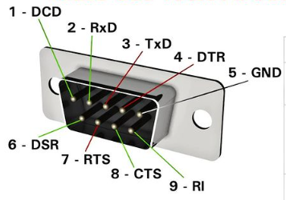

Introduction
Parallèle vs Série
Câble de communication Série
Vitesse de communication
Synchronisation
L'UART
Buffer de réception
Buffer de transmission
Port Série Arduino ≠ RS232
La librairie Serial
Conflit sur le port Série
Exemples
Communication basique
Contrôle d'une LED via le port série
Chaîne de commande avec paramètre entier

Port Série
Introduction
L'échange d'information entre différents blocs d'un système constitue une brique fondamentale du monde hyper connecté dans lequel nous vivons. Les normes de communication se multiplient et se comptent par dizaines. Voici quelques exemples loin d'être exhaustifs :
- Ethernet Une norme de réseau local (LAN) qui spécifie les aspects physiques et de liaison de données pour la transmission de données sur des câbles Ethernet,
- Wi-Fi (IEEE 802.11) : Une famille de normes de communication sans fil qui permettent la connexion d'appareils à un réseau local sans avoir besoin de câbles physiques,
- Bluetooth (IEEE 802.15.1) : Une norme de communication sans fil à courte portée utilisée pour connecter des appareils électroniques, tels que des smartphones, des écouteurs sans fil et des périphériques informatiques, dans un réseau personnel (PAN),
- USB (Universal Serial Bus) : Une norme de communication filaire utilisée pour connecter des périphériques électroniques, tels que des claviers, des souris, des imprimantes, des caméras et des périphériques de stockage, à un ordinateur ou à d'autres appareils hôtes,
- GSM (Global System for Mobile Communications) : Une norme de communication mobile utilisée pour les réseaux de téléphonie mobile. Elle spécifie les normes pour la transmission de la voix et des données sur les réseaux cellulaires,
- LTE (Long-Term Evolution) : Une norme de communication sans fil utilisée pour les réseaux de téléphonie mobile de quatrième génération (4G), offrant des vitesses de données plus élevées et une meilleure qualité de service que les normes précédentes,
- TCP/IP (Transmission Control Protocol/Internet Protocol) : Alors que TCP et IP sont techniquement deux protocoles distincts, ils sont souvent mentionnés ensemble car ils forment la base du fonctionnement d'Internet et des réseaux informatiques modernes. TCP gère la transmission des données de manière fiable et ordonnée, tandis qu'IP s'occupe du routage des paquets de données sur le réseau. Ensemble, ils permettent la communication et l'échange de données entre les appareils connectés à Internet,
- NFC (Near Field Communication) : Une norme de communication sans fil à courte portée utilisée pour l'échange de données entre des dispositifs situés à proximité les uns des autres, souvent utilisée pour les paiements sans contact et le partage d'informations entre appareils mobiles,
- I2C (Inter-Integrated Circuit) : Un protocole de communication série utilisé pour la communication entre circuits intégrés sur une carte de circuit imprimé. Il est souvent utilisé pour connecter des composants tels que des capteurs, des afficheurs et des mémoires à un microcontrôleur,
- CAN (Controller Area Network) : Un protocole de communication série largement utilisé dans l'industrie automobile pour permettre la communication entre les différents systèmes électroniques des véhicules, tels que les moteurs, les freins, les airbags, etc,
- LoRa (Long Range) : Une technologie de communication sans fil à longue portée conçue pour les réseaux bas débit, souvent utilisée dans les applications IoT pour la surveillance à distance, le suivi d'actifs, et d'autres cas d'utilisation nécessitant une large couverture géographique,
- SPI (Serial Peripheral Interface) : Un protocole de communication série synchrone utilisé pour la communication entre des périphériques électroniques sur une carte de circuit imprimé. Il est couramment utilisé pour connecter des microcontrôleurs à des capteurs, des écrans, des modules de mémoire, et d'autres périphériques,
Toutes ces normes de communication ont un ancêtre commun: Le standard de communication série développé dans les années 60 et standardisé sous la nomenclature RS232C
Parallèle vs Série
Lors d'une séquence de communication, on échange du texte et des nombres. Ces deux types d'information sont codés en binaire empaqueté par groupe de 8 bits appelé octets.
- En code ASCII ISO-8859-1, le caractère 'é' est codé sur un octet par 0xE9 = 111010001
- En code Unicode UTF-8, le caractère 'é' est codé sur deux octets par 0xC3 0xA9 = 11000011 10101001
- En code ASCII ISO-8859-6, le caractère arabe 'ك' est codé sur un octet par 0xE3 = 111000011
- En code Unicode UTF-8, le caractère 'ك' est codé sur deux octets par 0xD9 0x83 = 11011001 10000011
- Le nombre entier positif 23456 est codé sur deux octets par 01011011 10100000
- Le nombre entier négatif -23456 est codé sur deux octets par 10100100 01100000
- Le nombre réel 25.34 est représenté en virgule flottante IEEE-754 sur 4 octets: 01000001 11001010 10111000 01010001
En résumé, quelque soit le type d'information à échanger, il suffit de savoir transmettre et recevoir des octets
Transmission parallèle
On utilise un cable d'au moins 8 fils. l'émetteur place chaque fil à une tension équivalente au bit correspondant. Par exemple 0 Volts pour le 0 logique et 5 Volts pour le 1 logique. Les huit bits sont envoyés en même temps, tout se passe comme si on a une autoroute à 8 voies et 8 voitures passent en même temps
Transmission Série
Les 8 bits sont envoyé l'un après l'autre sur le même fil. l'émetteur place le fil successivement soit à 0V soit à 5V selon le bit à transmettre. Tout se passe comme si on a une autoroute à une seule voie et 8 voitures qui passent l'une après
Pour un tas de raisons plus au moins évidentes, la quasi totalité des standard de communication filaires ont adoptés le mode de communication série. Parmi ces raisons, on peut citer :
- Réduction des coûts et de complexité
- Augmentation de la portée
- Meilleurs performance, car le couplage capacitif entre les fils d'un même cable parallèle engendre un taux d'erreur qui augmente avec la fréquence et la longueur du câble et qui de vient très vite prohibitif
Câble de communication série
Pour une communication bidirectionnelle (liaison full duplex), deux fils sont utilisés, un dans chaque sens, avec un fil de masse supplémentaire servant de référence électrique.
- Tx: Transmit Data
- Rx: Receive Data
- Gnd : Ground = référence électrique
Vu son apparence, ce cable est souvent appelé câble croisé
Vitesse de communication
Comme les bits sont transmis l'un après l'autre, la vitesse de communication représente le nombre de bits transmis par seconde. On utilise souvent le terme "Baud Rate" avec l'unité "baud" pour désigner la vitesse de communication. Par exemple 9600 baud signifie 9600 bits/s.
Le mode de communication est dit Asynchrone, cela signifie que l'émetteur ne partage par son horloge avec récepteur sur un fil dédié comme c'est le cas des systèmes de communication synchrones. Pour ne pas perdre d'information, il faut que le récepteur collecte les bits exactement au même rythme qu'ils ont été transmis par l'émetteur. D'où la règle fondamentale : L'émetteur et le récepteur doivent être configuré à la même vitesse de communication
Pour des raisons historiques, les vitesses de communication communément utilisées sont 300, 600, 1200, 2400, 4800, 9600, 14400, 19200, 28800, 38400, 57600, ou 115200 baud
Synchronisation
Dans le flux de bits transmis par l'émetteur, il est important que le récepteur puissent repérer le premier bits de chaque octet. Pour cette raison, le récepteur va insérer deux bits de synchronisation supplémentaires et chaque octet sera transmis de la façon suivante :
- Au repos la ligne Tx est toujours au niveau 1
- L'émetteur transmet un "Start bit" (S) toujours = 0
- L'émetteur transmet le 8 bits de données en commençant par le LSB
- L'émetteur transmet un "Stop bit" (P) toujours = 1
- La ligne Tx restera à 1 jusqu'au début de l'octet suivant
Comme on peut le constater sur le signal, la transmission d'un octet commence toujours par une transition descendante. En détectant cette transition, le récepteur aligne son horloge sur celle de l'émetteur ce qui lui permet de lire correctement les bits de données.
L'UART
L'UART (Universal Asynchronous Receiver/Transmitter) est le moteur du port série. C'est un module intégré dans le microcontrôleur qui se charge de gérer les communications série.
- Elle s'occupe de la sérialisation des données :
- En émission, elle reçoit les données en parallèle sur le bus du microcontrôleur et les transmet en série un bit après l'autre sur un seul fil vers un système distant,
- En réception, elle réalise l'opération inverse, elle reçoit les données bits par bit et transfert en parallèle sur le bus du microcontrôleur
- Elle gère la vitesse de communication connue sous le nom de baud rate. Elle fixe la fréquence de l'horloge qui cadence la transmission des bits sur la ligne TxD et la réception des bits sur la ligne RxD
- Elle s'occupe de la synchronisation en émission et en réception à l'aide du Start bit et du Stop bit
- Elle s'occupe de la détection d'erreurs à l'aide du bit de parité
- Elle s'occupe du control de flus à l'aide des lignes DTR, DSR, RTS, CTS ...
Buffer de réception
Le buffer de réception du port série est une zone de mémoire temporaire (prise dans la RAM) qui stocke les données entrantes provenant de la liaison série (UART) jusqu'à ce qu'elles soient lues par le programme.
Le buffer de réception a une taille fixe, qui est généralement de 64 octets sur le Arduino Uno.
Le buffer de réception permet d'éviter la perte de données lorsqu'elles sont reçues plus rapidement que le programme ne peut les traiter. Les données sont stockées dans le buffer jusqu'à ce que le programme puisse les lire.
Les données sont lues du buffer de manière séquentielle. Chaque octet lu est retiré du buffer pour faire place aux données suivantes.
Quand le buffer de réception est plein, les nouvelles données reçues seront perdue.
Buffer de transmission
Le buffer de transmission du port série est une zone de mémoire qui stocke temporairement les données envoyées par le programme jusqu'à ce qu'elles soient effectivement transmises par l'UART
Le buffer de transmission a une taille fixe, généralement de 64 octets sur le Arduino Uno.
Une fois que les données sont placées dans le buffer de transmission, l'UART les envoie à un rythme déterminé par la vitesse de transmission (baud rate).
Port Série Arduino ≠ RS232C
Attention, le port série du Arduino n'est pas tout à fait compatible avec le standard de communication série RS232C
- Niveaux électriques des Signaux Tx, Rx
- Arduino utilise les niveaux TTL : 0 -> 0 Volts, 1 -> 5 Volts
- RS232C utilise des niveaux inversés de forte valeur : 0 ≈> +12 Volts, 1 ≈> -12 Volts
- Control de flux hardware
- Arduino ne dispose que de deux broches de données TxD et RxD. Le control de flux doit se faire en software.
- RS232C utilise un connecteur DB9 standard sur lequel, en plus des broches TxD et RxD, on trouve les broches de control de flux DTR, DSR, RTS, CTS, RI, DCD. Ces broches permettent aux deux machines qui communiquent de gérer les échanges et éviter les pertes de données 
- Control de parité
- Arduino utilise toujours une donnée de 8 bits. Il n'utilise pas le mécanisme de control de parité pour détecter les erreurs
- RS232C offre la possibilité d'utiliser une donnée de 7 bits plus un bit de parité pour détecter les erreurs de transmission
- Bit de Stop
- Arduino utilise toujours un seul bit de Stop
- RS232C offre la possibilité d'utiliser plusieurs bits de Stop
La librairie Serial
La librairie Serial est installée d'office avec l'environnement Arduino-IDE
- Serial.begin(speed);
- Initialise le port série et définit la vitesse de communication
- Serial.begin(9600);
- Serial.write()
- Serial.write(nombre); Transmet seulement l'octet bas du nombre (troncature)
- Serial.write(66); //transmet l'octet 66
- Serial.write(856); // Transmet l'octet 88 (= 01011000 = octet bas de 856=1101011000)
- Serial.write(chaîne); Transmet le code UTF-8 de chaque caractère de la chaîne Le code UTF-8 d'un caractère peut être constitué de 1, 2 ou 3 octets
- Serial.write("A"); //transmet l'octet 65 = 0x41 = code du caractère A
- Serial.write("déçu"); //transmet 0x64 0xC3 0xA9 0cC3 0xA7 0x75
- Serial.write(tableau, n); Transmet n octets du tableau
- Serial.print()
- Serial.print(chaîne); Transmet le code UTF-8 de chaque caractère de la chaîne Le code UTF-8 d'un caractère peut être constitué de 1, 2 ou 3 octets
- Serial.print("A"); //transmet l'octet 65 = 0x41 = code du caractère A
- Serial.print("déçu"); //transmet 0x64 0xC3 0xA9 0cC3 0xA7 0x75
- Serial.print(entier, base); // transmet la chaîne représentant le nombre `entier` dans la bas `base`
- Serial.print(2048); //Transmet la chaîne "2048" -> 4 octets: '2' , '0' , '4' , '8' -> octets 50, 48, 52, 56
- Serial.print(23456,HEX); //Transmet la chaîne "5BA0" qui est la représentation de 23456 en hexadécimal -> 4 octets 53, 66, 65 et 48 = codes ascii des caractères '5', 'B', 'A' et '0'
- Serial.print(240,BIN); //Transmet la chaîne "11110000". Un nombre négatif est représenté sur 32 bits quelque soit son type
- Serial.print(reel, n); // transmet la chaîne représentant le nombre réel 'reel' avec n décimales
- Serial.print(235.4567); //Transmet la chaîne "235.46" (2 décimales, arrondit correct)
- Serial.print(235.45673,4); //Transmet la chaîne "235.4567" (4 décimales)
- Serial.println();
- Identique à Serial.print() mais transmet en plus un retour à la ligne (CR LF)=(13 10)
- Serial.println(); //Retour à la ligne
- Serial.println("Bonjour"); // Transmet "Bonjour" suivie d'un retour à la ligne
- Serial.setTimeout(tms);
- Définit la durée de timeout en lecture. Par défaut le timeout est fixé à 1000 ms = 1s
- Le Timeout évite le blocage lors des opérations de lecture
- Serial.available();
- Retourne le nombre d'octets disponible dans le buffer de réception
- b = Serial.read();
- Lit un octet à partir du buffer de réception. L'octet est retiré du buffer,
- Non bloquante, retourne (immédiatement) -1 (255) si le buffer de réception est vide,
- n = Serial.readBytes(B, length);
- Lit un ensemble d'octets à partir du buffer de réception
- B: nom du tableau qui reçoit les données. Type char[] ou byte[]
- length: nombre d'octets à lire (int)
- Retourne n = nombre d'octets effectivement lus. Peut être inférieur à length en cas de timeout
- n = Serial.readBytesUntil(terminator, B, length);
- Lit un ensemble d'octets et les place dans le tableau B
- La réception s'arrête quand on reçoit l'octet terminator ou après la réception de length octets ou après un timeout
- Retourne le nombre n d'octets effectivement lus. Peut être inférieur à length en cas de timeout
- S = Serial.readString();
- Lit les caractères qui arrivent et les place dans le String S
- S'arrête après un Timeout
- Si le flux entrant contient des caractères spéciaux comme un retour à la ligne, il est ajouté à la chaîne S
- S = Serial.readStringUntil(C);
- Lit les caractères qui arrivent et les place dans la chaîne S,
- S'arrête à la réception du caractère C ou après un Timeout,
- Serial.end();
- Désactive l'UART. Les broches 0 et 1 peuvent de nouveau être utilisées comme des E/S normales
- N = Serial.parseInt();
- Lit correctement le premier entier (int ou long) reçu en mode texte
- Les premiers caractères qui ne sont pas des chiffres sont retirés du buffer et ignorés
- La lecture du nombre s'arrête au premier caractère qui n'est pas un chiffre y compris CR ou LF. Ce caractère et les suivants ne sont pas retirés du buffer
- La lecture peut aussi s'arrêter au bout du timeout
- Si par exemple le buffer contient xx yz 234abc xyz
- Les caractères xx yz sont retirés du buffer et ignorés
- Le nombre 234 est affecté à N
- Les caractères abc xyz restent dans le buffer de réception
- serialEvent(){ ... }
- Si on ajoute cette fonction au programme, à chaque repassage dans la fonction loop(), si le buffer de réception contient quelque chose, cette fonction sera exécutée
- Vider le buffer de réception
- Il arrive souvent d'avoir besoin de vider le buffer de réception avant de commencer la scrutation du flux entrant
- while(Serial.available()){Serial.read(); delay(2);}
-
byte B[] = {0x11, 0x22, 0x33, 0x44, 0x55};
Serial.write(B,3); //transmit
3 octets du tableau B
Conflit sur le port série
Si on a un module branché sur le port série du Arduino (broches 0 et 1), on peut avoir un problème lors du téléversement d'un programme. Comme on peut le constater sur la figure, le port série de l'ATmega est connecté en parallèle sur celui du module d'ou le conflit
Dans ce cas il faut débrancher le module pendant le téléversement
Pour la même raison, lors de la pase d'exécution, il ne faut pas ouvrir le moniteur série car il va entrer en conflit avec le module
Exemples
Exemple 1 : Communication basique
Utilisez le moniteur série ou le virtual terminal sur Proteus ISIS pour tester le programme suivant :
void setup() {
Serial.begin(9600);
Serial.println("Hello, world!");
Serial.println("Envoyez moi des messages");
}
void loop() {
if (Serial.available() > 0) {
String msg = Serial.readString();
Serial.print("Message reçu : ");
Serial.println(msg);
}
}
Exemple 2 : Contrôle d'une LED via le port série
Ce programme permet de contrôler une LED en envoyant des commandes via le port série. Les commandes "ON" et "OFF" allument et éteignent la LED, respectivement.
const int ledPin = 13; // Pin de la LED intégrée
void setup() {
Serial.begin(9600);
pinMode(ledPin, OUTPUT);
Serial.println("Envoyez 'ON' pour allumer la LED et 'OFF' pour l'éteindre.");
}
void loop() {
if (Serial.available() > 0) {
String command = Serial.readStringUntil('\n');
command.trim(); // Supprimer les espaces blancs en début et fin de chaîne
if (command.equalsIgnoreCase("ON")) {
digitalWrite(ledPin, HIGH);
Serial.println("LED allumée.");
} else if (command.equalsIgnoreCase("OFF")) {
digitalWrite(ledPin, LOW);
Serial.println("LED éteinte.");
} else {
Serial.println("Commande non reconnue.");
}
}
}
Exemple 3 : Chaîne de commande avec paramètre entier
Ce programme illustre une façon parmi d'autres de lire une commande constituée d'un mot clé suivi d'un paramètre numérique.
la commande et le paramètre doivent être séparés d'au moins un espace
Par exemple: LEFT 125
void clearInputBuffer() {
do {
delay(2);
Serial.read();
} while (Serial.available());
}
void setup() {
Serial.begin(9600);
Serial.setTimeout(5000);
}
void loop() {
if (Serial.available()) {
String cmd = Serial.readStringUntil(' ');
int param = Serial.parseInt();
clearInputBuffer();
Serial.println("Commande: -->"+cmd+"<--");
Serial.println("parametre: -->"+String(param)+"<--");
}
}